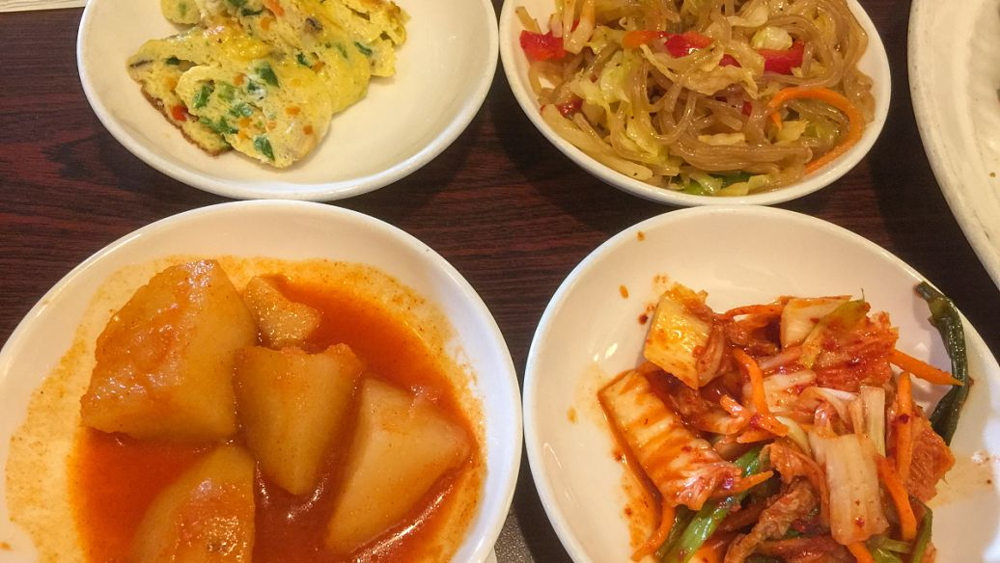

品味江南，探寻美食之美
电话：0510-83276058
邮箱：wucx@edu.com
地址：江苏省无锡市
所谓江南，便联想到了江南烟雨，风土人情，那也更少不了江南美食。融合了江南水乡的风情，也有许多有名的菜系从江南而出。从经典的本帮菜到精致的苏菜，每一道菜肴都是一种对传统的致敬，同时也是对创新的勇气。
在江南，你可以品味到飘香的糖醋小排、绵软的糖醋里脊、鲜美的蟹粉小笼包，每一口都是对美食的独特解读。无论是古朴的巷弄小吃还是现代创意料理，江南美食以其多元而独特的魅力，吸引着各地美食爱好者的目光。
我们怀揣对江南美食的热爱，踏上味觉之旅，品味人生。